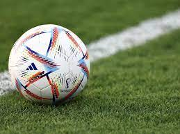
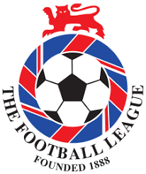

This will be a page of the origin of Football/Soccer.

During the Han Dynasy a game called Cuju was played as a military exercise. The game may have spread and been enjoyed by local citizens as well. FIFA has recognized the evidence that this is the first known form of football. The sport was improved during the Tang Dynasty when the feather-stuffed ball was replaced by an air-filled ball with a two-layereed hull. The level of female cuju teams also improved. Cuju flourished during the Song Dynasty due to social and economic development extending its popularity to every social class. At the time, professional cuju players were popular and the sport began to take a commerical leap. It wasn't just in Asia, it had moved across the world.
During the 18th century, some students from the University of Oxford decided to change the name of the sport of football and rugby since they couldn't distinguish between the sports. They changed the name to assoccer meaning association football and rugger for rugby football. After. England started going back to football as their main way of saying it and soccer travel to America.
Football clubs have existed since the 15th century, but unorganized and without offiical status. It is therefore hard to decide which the first football club was. Some historians suggest that it was the Foot-Ball Club formed 1824 in Edinburgh. Early clubs were often formed by former school students and the first of this kind was formed in Sheffield in 1855. The oldest among professional football clubs is the English club Notts County that was formed in 1862 and still exists today.
| Pos | Team | Pld | W | D | L | GF | GA | GD | PTS | Qualification |
| 1 | Preston North End (C) | 22 | 18 | 4 | 0 | 74 | 15 | 59 | 40 |  |
| 2 | Aston Villa | 22 | 12 | 5 | 5 | 61 | 43 | 18 | 29 | |
| 3 | Wolverhampton Wanderers | 22 | 12 | 4 | 6 | 50 | 37 | 13 | 28 | |
| 4 | Blackburn Rovers | 22 | 10 | 6 | 6 | 66 | 45 | 21 | 26 | |
| 5 | Bolton Wanderers | 22 | 10 | 2 | 10 | 63 | 59 | 4 | 22 | |
| 6 | West Bromwich Albion | 22 | 10 | 2 | 10 | 40 | 46 | -6 | 22 | |
| 7 | Accrington | 22 | 6 | 8 | 8 | 48 | 48 | 0 | 20 | |
| 8 | Everton | 22 | 9 | 2 | 11 | 35 | 46 | -9 | 20 | |
| 9 | Burnley | 22 | 7 | 3 | 12 | 42 | 62 | -20 | 17 | Re-Elected |
| 10 | Derby County | 22 | 7 | 2 | 13 | 41 | 61 | -20 | 16 | |
| 11 | Notts County | 22 | 5 | 2 | 15 | 40 | 73 | -33 | 12 | |
| 12 | Stoke | 22 | 4 | 4 | 14 | 26 | 51 | -26 | 12 |
Many compare Lionel Messi & Cristiano Ronaldo to be the greaatest due to their massive accomplishments and here are some facts..
Email: superfootballfan@emailme.com
Phone: 123-456-7890